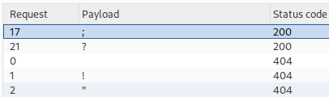

Exploiting path delimiters for web cache deception
- Provided with blog website, credentials “wiener:peter”, told to find the API key for user carlos.
- Logged in with provided credentials
- Intercepted refresh request in burpsuite
- Appended string “test” to /my-account in request and received 404 error. Since it is not a redirect it is a functional endpoint for finding and abusing the delimiter
- Forwarded request to intruder
- Added positions between original path and arbitrary string and pasted provided possible delimiter list into payload
- Discovered “;” and “?” are delimiters used for this server:

- Moved Intruder positions to be at the end of arbitrary string and set prior position to “?”
- Reran the attack after changing payload to list of several common file extensions
- Nothing unique discovered
- Switched “?” to “;” and reran attack
- Discovered many image extensions, .js, .css had caching enabled
- Created custom CSRF attack containing /my-account;test.js appended to base URL and pasted into body of provided exploit server
- Delivered exploit to victim
- Navigated to https://0a2c003703bdb28e807b216200d00095.web-security-academy.net/my-account;test.js
- Discovered carlos' API key fDufc20KjwjNHmcuAuhOeFzBSoVrvE0z
- Submitted API key and completed lab successfully: